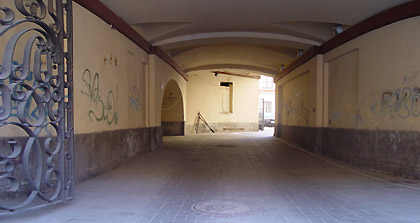

Греки времен Перикла придумали энтазис и курватуру. Оказалось, что только слегка выпуклый антаблемент и легкая припухлость фуста смотрятся абсолютно прямыми. С их помощью они выпрямляли «картину мира», все линии которого сходились в одну точку схода, туда, где обитала судьбоносная воля Зевса.
Эта логика была изящна и непогрешима.
С тех пор картина мира сильно искривилась, а пространство изогнулось в дугу. Параллельные прямые заискрили при пересечении. Уставшего Зевса сменило беспристрастное E=mc2.
Сегодня целые куски этого глубинного пространства можно увидеть и иметь всегда при себе, благодаря цилиндрической графике Андрея Топунова.
И теперь мы не подправляем, а следуем изгибам пространства.
Зав. кафедрой «Ландшафтная архитектура» МАРХИ,
профессор
А.Ф. Квасов
ЦИЛИНДРИЧЕСКАЯ ФОТОГРАФИЯ АНДРЕЯ ТОПУНОВА
(попытка взаимодействия с пространством)
23.05.2006—11.06.2006
Анфилада Главного здания

Перед Вами моя скромная попытка «улучшить достоверность» ощущений, возникающих при наблюденплоских изображений пространственных объектов. В данном случае — фотографий.
Как известно, фотографическое изображение строится по законам линейной перспективы, которсчитались наиболее приемлемыми для передачи «достоверности» в реалистической живописи, начинаяих открытия в эпоху Возрождения.
Благодаря фотографии были обнаружены «искажения» линейной перспективы, связанные с «заваловертикальных линий, деформациями на краях фотографий, а также карикатурностью снимков, снятыхблизких расстояний, чего не допускали художники, стремящиеся к достоверности изображений.
Однако, все эти «искажения» присутствуют и при взгляде в пространство, но становятся значимытолько после фиксирования того, что мы видим, на плоскости (картинной плоскости).>
Придуманы способы борьбы с этими «искажениями».
Длиннофокусные объективы позволяют до минимума свести искажения на краях фотографикарикатурности можно избежать, отказавшись от неудачных ракурсов при съемке.
Для устранения «завала» вертикальных линий используют шифт-объективы, в которых конструктивпредусмотрен механизм смещения оптического блока для захвата в объектив всего зданиясохранением вертикального положения корпуса фотоаппарата.
Но достоверность изображений все равно ограничивается наличием картинной плоскости. Есудастся «разрушить» картинную плоскость, достоверность изображений должна повыситься.
Оговоримся сразу, что стереофотография (в принципе «разрушающая» картинную плоскость) такискажает представление о пространстве. Оно (пространство) в стереофотографиях перестает бынепрерывным по глубине, а превращается в кулисно-ярусное, в котором существуют «плоскиизображения объектов, позиционированные в плоскостях, параллельных картинной плоскости.
Представленный метод сводится к тому, что изображение предъявляется не на плоскости, а цилиндрической поверхности. Этим осуществляется «провокация объема», т. к. мы имеем делореальной глубиной, которая продолжается дальше в пространство изображения.
Андрей Топунов. 2006
ХАФПАЙП АНДРЕЯ ТОПУНОВА
Две с половиной тысячи лет назад Платон выразил мысль о превосходстве «неизобразительномузыки над изобразительным искусством. Музыка, не воздействуя на зрительные органы, по-своеотражает жизненные процессы, обобщая, осмысливая их и добиваясь огромных результатов.
По Платону, видимые вещи –– лишь «тени идей», а изображенные художником, остановятся «тенями теней». Музыка же помогает человеку переноситься в мир «идей».
В этой «ущербности» (несовершенное в совершенном) кроется постоянное стремление живописцскульптора, фотографа вырваться из простого круга изобразительности к признанию примата>выразительности, граничащим с полем созидательности. Импрессионизпостимпрессионизм, кубизм, футуризм, абстракционизм и др. — не что иное, как модернизированнидеи Платона, по выражению искусствоведов — «омузыкаливание» изобразительного искусства.
Так и цилиндрическая фотографика Андрея Топунова апеллирует не просто к глазу, а к сознанзрителя, поскольку вызванные ею эмоции автор считает эстетической ценностью произведения. Енедостаточно простых изобразительных средств, он старается погрузиться в эстетическпространство, композиционная структура которого наполнена практическими и жизненными «идеямиНе отказываясь от реальности изображения, автор фокусирует внимание зрителя, обладающехудожественной культурой, на предметах, их элементах и деталях, пронизанных «поэзислучайности», и достигает целостности зримого образа, будь то замок в Выборге, дворцово-парковкомплекс «Mon repos» или обычные московские подворотни.
Вспоминается десятиминутный фильм в Стокгольмском музее «Vasa», демонстрируемый сферическом экране, когда в момент гибели легендарного фрегата зрители вскрикивают от сладкоужаса и реального ощущения катастрофы, впечатления, что палуба уходит из под Ваших ногпогружение в пучину вод неизбежно. Конечно, в статичной фотографии такого передать невозможнПоэтому здесь ощущается некая театрализация изображения, но не только потому, что часприсутствуют как бы боковые кулисы, а в том значении, что театр — это, прежде всего, живэнергия, это то, что живет, пульсирует и случается здесь и сейчас. А это уже нас уносопять на две с половиной тысячи лет назад, но вспоминается уже не Платон, а Аристофан, в сорокомедиях которого кипит эта живая энергия, переплескиваясь через край.
Цилиндрическая фотографика Андрея Топунова не простой пересказ о чем-то, — здесь попытследить за действием, погружаться в него, а изумленные участники действия внезапно обнаруживаючто их несет туда, куда они вовсе не собирались идти.
Основная особенность цилиндрической фотографики состоит в том, что при человеческом масштаизображаемого и общем пуризме тематики она предполагает непосредственный контакт со зрителемне подлежит репродуцированию на станицах книги, журнала, буклета.
О.Г.Максимов,
доктор архитектуры, профессор
антаблемент (от франц. entablement), верхняя часть сооружения, обычно лежащая колоннах, составной элемент архитектурного ордера; членится на архитрав, фриз, карниз.
курватура (от лат. curvatura — кривизна), нарочитая, едва заметная кривизпрямолинейных частей здания, применяемая для устранения оптических искажений (при восприятздания в ракурсе) и для усиления пластической выразительности архитектуры.
фуст (от ит. fusto), тело колонны между базой и капителью.
хафпайп (от англ. half pipe — полутруба) жёлоб со снежным покрытием, где делаютразличные трюки
энтазис (от греч. entasis — напряжение), утолщение ствола колонны в средней его частсоздающее впечатление напряженности и устраняющее оптическую иллюзию вогнутости ствола.